Họ tên: Hoàng Ngọc Nhật Tân – MSSV: 2324802010346
Repo: github.com/Tantamthan/notes-api-2324802010346
| Tiêu chí | Máy cá nhân | Codespace |
|---|---|---|
Thời gian từ lúc bắt đầu đến khi chạy được node -v |
Đã cài sẵn từ trước (Node 24, JDK 17, Docker). Nếu cài mới Node.js + JDK + Docker Desktop ước tính 30–60 phút: tải bộ cài, cài đặt, cấu hình PATH, khởi động lại máy. | Khoảng 15 phút từ lúc bấm "Create codespace", không cần cài gì trên máy. Thời gian này gồm cả lần đầu bị lỗi cài Docker-in-Docker (container chạy chế độ khôi phục) và lần rebuild sau khi sửa image thành javascript-node:22-bookworm. Nếu cấu hình đúng ngay từ đầu, chỉ mất vài phút. |
| Số CPU, RAM | 16 CPU, 23.2 GB RAM | 2 CPU, 7.8 GB RAM (từ API) |
| Hệ điều hành | Windows 11 (Windows_NT 10.0.26200) | Linux 6.8.0-1064-azure (Ubuntu, chạy trên hạ tầng Microsoft Azure) |
| Cách truy cập từ thiết bị khác | Khó: phải mở port, cấu hình router/tường lửa; thường chỉ truy cập được trong mạng LAN. | Đặt cổng 3000 sang Public, mở URL *-3000.app.github.dev trên điện thoại qua Internet; xong chuyển lại Private. |
| Chi phí, đo bằng gì | Trả trước tiền mua máy và tiền điện; không đo theo mức sử dụng. | Trả theo mức dùng, đo bằng core-giờ (máy 2 lõi chạy 1 giờ = 2 core-giờ). Gói GitHub Free có 120 core-giờ/tháng (≈ $10,80, tức ≈ $0,18/giờ máy 2 lõi) và 15 GB lưu trữ, hạn mức làm mới mỗi tháng. Buổi làm bài dùng khoảng 1 core-giờ (ước tính, vì trang Settings → Billing → Usage cập nhật chậm vài giờ). |
Nhận xét: Máy cá nhân có cấu hình mạnh hơn Codespace (16 CPU so với 2 CPU), nhưng Codespace vượt trội ở tốc độ chuẩn bị môi trường, khả năng truy cập từ mọi thiết bị, môi trường đồng nhất cho cả lớp (cùng Node 22, JDK 25) và chi phí tính theo mức dùng. Khi cần mạnh hơn, có thể đổi Codespace sang máy 4, 8 hoặc 16 lõi mà không phải mua phần cứng. Ngược lại, đám mây cũng mang rủi ro mới: lần tạo đầu tiên bị lỗi do image của nhà cung cấp thay đổi, cho thấy môi trường phụ thuộc vào bên thứ ba.
| Đặc tính NIST | Thao tác minh họa trong bài |
|---|---|
| Tự phục vụ theo yêu cầu (On-demand self-service) | Tự bấm "Create codespace" là được cấp một máy ảo Linux có sẵn Node, Java, Docker, không cần ai duyệt hay cài đặt thủ công. |
| Truy cập mạng rộng (Broad network access) | Lập trình hoàn toàn trên trình duyệt; mở API từ điện thoại qua URL công khai *.app.github.dev. |
| Gộp tài nguyên (Resource pooling) | Máy ảo được cấp từ kho máy chủ dùng chung trên Azure (nhân 6.8.0-1064-azure, trường host là tên ảo); người dùng không biết máy vật lý nằm ở đâu. |
| Co giãn nhanh (Rapid elasticity) | Có thể đổi cấu hình 2 → 4 → 8 lõi bằng "Change machine type", rebuild hoặc tạo/xóa codespace trong vài phút. |
| Dịch vụ đo lường được (Measured service) | Mức sử dụng được đo bằng core-giờ và GB lưu trữ, quy đổi ra tiền (120 core-giờ ≈ $10,80) và hiển thị ở Settings → Billing → Usage; hạn mức tự làm mới mỗi tháng. |
| Thông tin | Nội dung |
|---|---|
| Họ và tên | Hoàng Ngọc Nhật Tân |
| MSSV | 2324802010346 |
| Repo GitHub | https://github.com/Tantamthan/notes-api-2324802010346 |
| Image trên GHCR | ghcr.io/tantamthan/notes-api:1.0 |
| Link package | https://github.com/users/Tantamthan/packages/container/package/notes-api |
Dockerfile dùng image nền node:22-alpine cho gọn nhẹ, chỉ cài thư viện chạy thật (npm ci --omit=dev) và chạy ứng dụng bằng người dùng node thay vì root để giảm rủi ro nếu container bị tấn công. Tệp .dockerignore loại bỏ node_modules (sẽ cài lại bên trong), .env (tránh lộ bí mật), .git và docs.
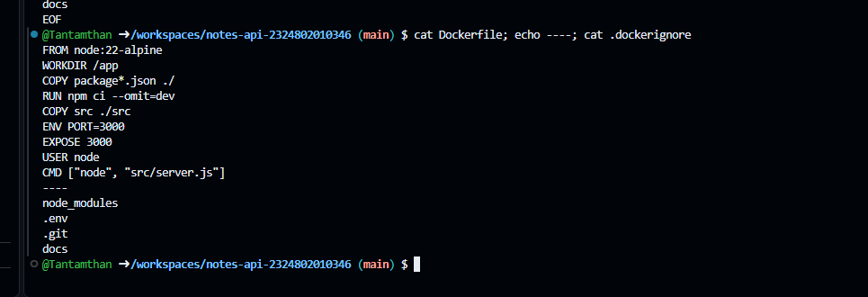
Image build thành công với tag notes-api:1.0. Docker bản 29 hiển thị hai cột thay cho cột SIZE cũ: image chiếm 251 MB trên đĩa sau khi giải nén (DISK USAGE) và 63,3 MB ở dạng nén (CONTENT SIZE), tức lượng dữ liệu phải tải khi push hay pull.
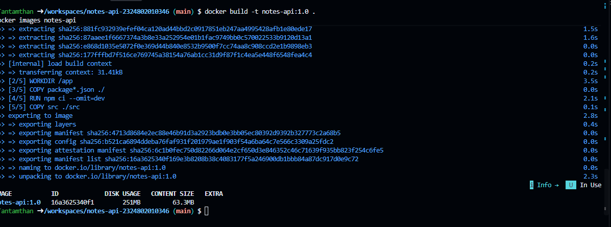
Khi gọi GET / vào cổng 3000 và 3001, trường host của hai bản sao khác nhau: notes1 là 99f95f78fb4b, notes2 là a8c74fd68b53, chính là ID của từng container. Ngược lại, cả hai đều báo cpus = 2 và memoryGB = 7,8, đúng bằng cấu hình máy Codespace, dù notes2 đã bị giới hạn --cpus=0.5 --memory=128m.
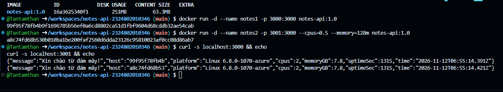
Lệnh docker stats --no-stream cho thấy giới hạn có thật: notes2 dùng 13,08 MiB / 128 MiB, còn notes1 dùng 13,41 MiB / 7,756 GiB, tức không bị giới hạn ngoài RAM của máy. Tệp /sys/fs/cgroup/memory.max bên trong notes2 ghi 134217728 byte, đúng bằng 128 MiB. Như vậy giới hạn đã được áp đặt, chỉ có ứng dụng không nhìn thấy nó (giải thích ở Câu 1).
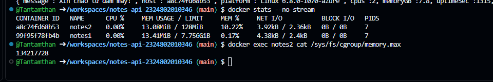
| Tiêu chí | Codespace (máy ảo) | Container notes2 |
|---|---|---|
| Thời gian khởi động | Khoảng 1 phút (Stop rồi Start lại codespace) | Khoảng 0,41–0,45 giây (3 lần đo: 0,452 / 0,426 / 0,413 giây) |
| Kích thước | 15 GB-tháng hạn mức đĩa, chứa cả hệ điều hành và công cụ | 251 MB trên đĩa (63,3 MB ở dạng nén), nhỏ hơn khoảng 60 lần |
| Nhân hệ điều hành | 6.8.0-1070-azure, nhân riêng của máy ảo chạy trên Azure | 6.8.0-1070-azure, dùng chung nhân với máy Codespace |
| Tài nguyên ứng dụng nhìn thấy | 2 lõi, 7,8 GB RAM | Vẫn thấy 2 lõi, 7,8 GB dù thực tế bị giới hạn 0,5 lõi và 128 MiB |
| Mức cô lập | Mạnh: phần cứng ảo do hypervisor cung cấp, mỗi máy có nhân riêng nên lỗi hay tấn công ở một máy khó lan sang máy khác | Yếu hơn: chỉ tách bằng namespaces (tiến trình, mạng, hệ thống tệp, tên máy) và cgroups (tài nguyên); dùng chung nhân nên một lỗ hổng nhân có thể giúp thoát ra máy chủ |
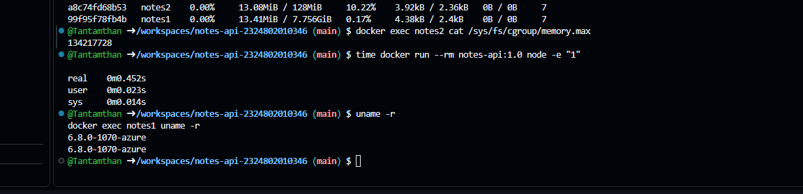
Hai lệnh uname -r trong và ngoài container cùng trả về 6.8.0-1070-azure, chứng tỏ container dùng chung nhân với máy chủ; hậu tố azure cũng cho thấy chính Codespace là một máy ảo chạy trên hạ tầng Azure. Container khởi động trong chưa đầy nửa giây, nhanh hơn Codespace khoảng 150 lần, vì không phải khởi động cả một hệ điều hành, chỉ cần tạo một tiến trình được cô lập trên nhân sẵn có. Cái giá phải trả là mức cô lập thấp hơn máy ảo.
Image được gắn tag ghcr.io/tantamthan/notes-api:1.0, đẩy lên GitHub Container Registry (digest sha256:16a3625340f1…) và chuyển sang chế độ Public.
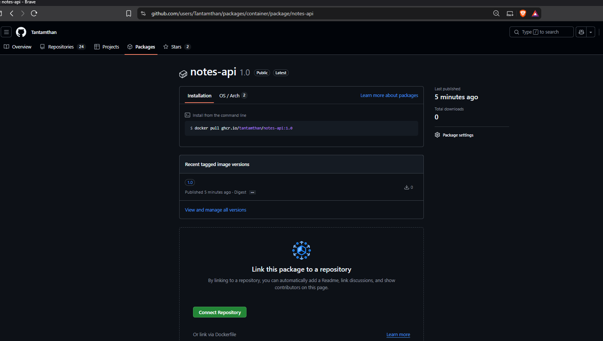
Để kiểm tra, toàn bộ container và image cục bộ được xóa, đồng thời đăng xuất khỏi ghcr.io bằng docker logout. Lệnh docker run -d -p 3000:3000 ghcr.io/tantamthan/notes-api:1.0 báo không tìm thấy image cục bộ, tự kéo về (Pull complete) với đúng digest lúc push, và API trả lời bình thường với host mới là 8390f99ff656. Việc kéo được image khi không đăng nhập chứng tỏ ai cũng tải được image.
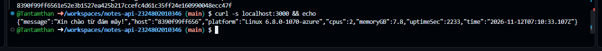
Ví dụ gốc có 1 máy chủ 8 lõi, mỗi lõi 1.000 MIPS; 2 máy ảo, mỗi máy 4 lõi, 512 MB RAM và 1.000 Mbps băng thông; 4 cloudlet, mỗi cloudlet cần 2 lõi và dài 10.000 MI. Mỗi cloudlet được đặt chỉ dùng 50% mọi tài nguyên (UtilizationModelDynamic(0.5)), tức 50% CPU, 256 MB RAM và 500 Mbps. Máy chủ dùng VmSchedulerSpaceShared nên không cho máy ảo dùng quá số lõi thật; mỗi máy ảo mặc định dùng CloudletSchedulerTimeShared. Broker chia cloudlet lần lượt cho các máy ảo đã tạo được.
Lưu ý khi làm thí nghiệm: tệp bootstrap.sh chỉ biên dịch mã ở lần chạy đầu tiên, các lần sau chạy lại tệp .jar cũ. Vì vậy sau mỗi lần sửa mã, dự án được biên dịch lại bằng mvn -q clean package -DskipTests rồi mới chạy, và tệp nguồn được khôi phục bằng git checkout trước lần kế tiếp để mỗi lần chỉ đổi đúng một yếu tố.
| Lần | Thay đổi | Hoàn thành cloudlet cuối (giây mô phỏng) | Nhận xét |
|---|---|---|---|
| 0 | Giữ nguyên | 20,1 | Cả 4 cloudlet bắt đầu ở 0,1 giây, chạy 20 giây |
| 1 | Nhân đôi VMS (2 → 4) | 45,6 | VM 2 và VM 3 không đặt được; cloudlet phải chờ đến 25,6 giây mới bắt đầu |
| 2 | Nhân đôi CLOUDLETS (4 → 8) | 40,1 (chỉ 4/8 cloudlet hoàn thành) | Cloudlet 4–7 thiếu RAM và băng thông, không hoàn thành; cloudlet 0–3 chậm gấp đôi |
| 3 | CloudletSchedulerSpaceShared | 20,1 | Giống hệt lần 0, không có cảnh báo |
Lần 0. Mỗi máy ảo nhận 2 cloudlet × 2 lõi = 4 lõi, vừa khít. Mỗi cloudlet chỉ dùng 50% CPU nên chạy với tốc độ 1.000 × 50% = 500 MIPS, mất 10.000 / 500 = 20 giây. Cộng 0,1 giây khởi tạo, cloudlet cuối xong ở 20,1 giây.
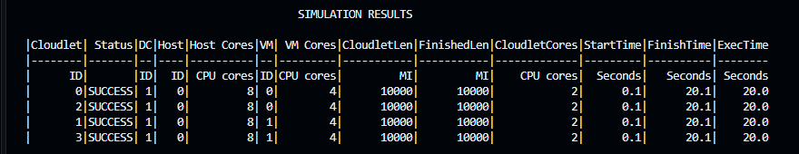
Lần 1. Bốn máy ảo cần 4 × 4 = 16 lõi, trong khi máy chủ chỉ có 8 lõi và không cho cấp vượt. VM 0 và VM 1 chiếm hết 8 lõi, VM 2 và VM 3 báo No suitable host found. Broker mặc định thử tạo lại các máy ảo hỏng mỗi 5 giây, tổng cộng 5 lần (ở các giây 5,1; 10,2; 15,3; 20,4; 25,5), và chỉ gửi cloudlet đi khi mọi yêu cầu tạo máy ảo đã có kết quả. Đến giây 25,6 broker bỏ cuộc, chuyển VM 2 và VM 3 vào danh sách thất bại, lúc đó cloudlet mới bắt đầu và vẫn chạy 20 giây, nên kết thúc ở 45,6 giây.
Thêm máy ảo không những không nhanh hơn mà còn chậm hơn lần 0 tới 25,5 giây. Điểm nghẽn nằm ở máy chủ vật lý: xin thêm máy ảo khi máy chủ đã hết lõi chỉ làm hệ thống tốn thời gian chờ, muốn nhanh hơn phải thêm máy chủ.
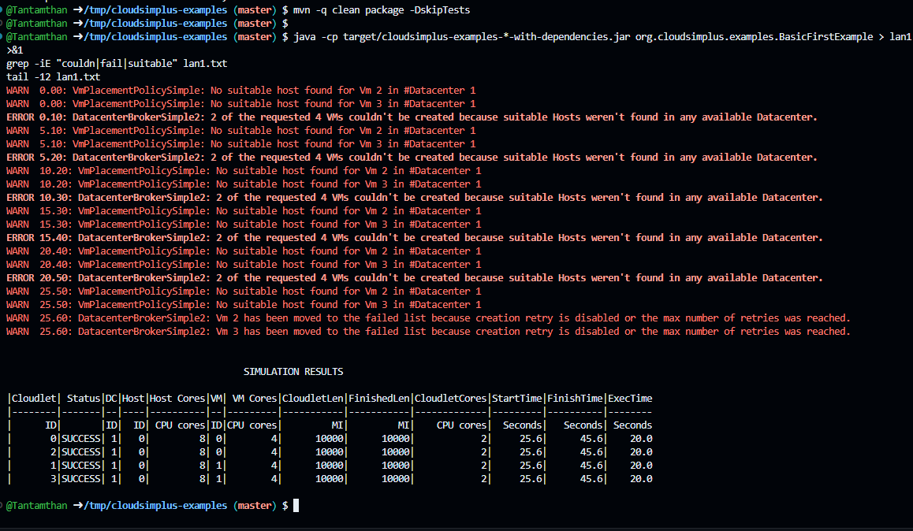
Lần 2. Mỗi máy ảo nhận 4 cloudlet (VM 0: cloudlet 0, 2, 4, 6; VM 1: cloudlet 1, 3, 5, 7). Hai cloudlet đến trước trên mỗi máy ảo lấy hết 2 × 256 = 512 MB RAM và 2 × 500 = 1.000 Mbps băng thông. Từ giây 10,1, log báo cloudlet 4–7 xin 256 MB RAM và 500 Mbps nhưng không còn, nên bị treo. Trong khi đó CPU vẫn được chia đều theo time-shared cho cả 4 cloudlet trên mỗi máy ảo, nên cloudlet 0–3 chỉ được nửa năng lực và chạy mất 40 giây thay vì 20 giây. Đến giây 40,22 máy ảo bị hủy khi vẫn còn 2 cloudlet chưa xong, nên cloudlet 4–7 không bao giờ hoàn thành và không có trong bảng kết quả.
Kết quả này cho thấy nút thắt không chỉ nằm ở CPU mà còn ở RAM và băng thông. Thêm tác vụ khi tài nguyên đã đầy vừa làm chậm các tác vụ đang chạy, vừa khiến tác vụ mới không chạy được.
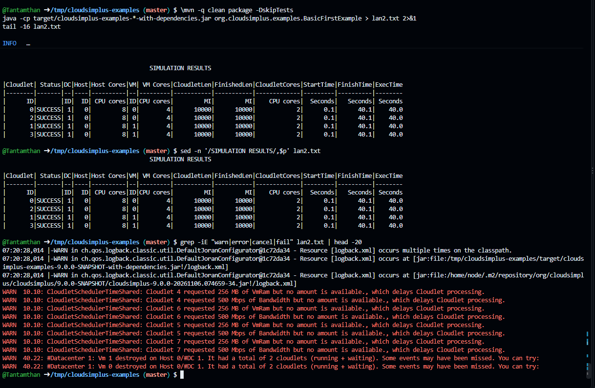
Lần 3. Kết quả giống hệt lần 0; phân tích ở Câu 2.
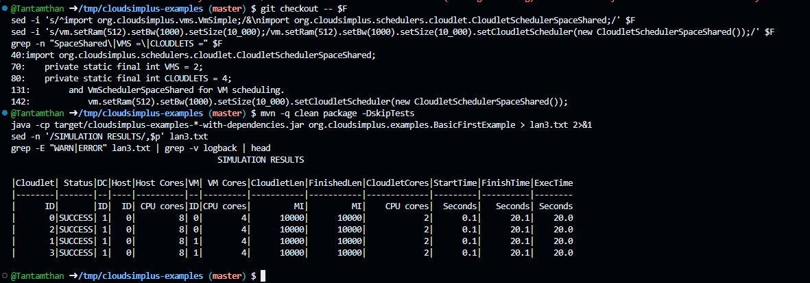
Đề bài: Vì sao API trong container notes2 vẫn báo memoryGB bằng RAM máy chủ dù đã giới hạn 128 MB? Ứng dụng Java hoặc Node.js chạy trong container cần lưu ý gì về điều này?
API lấy số liệu bằng os.totalmem() và os.cpus(). Hai hàm này hỏi thẳng nhân hệ điều hành (qua /proc/meminfo, /proc/cpuinfo). Container không có phần cứng ảo hay nhân riêng như máy ảo, nó dùng chung nhân với máy chủ, và các tệp trên không được cô lập theo container. Vì vậy nhân trả lời bằng thông tin của cả máy thật: notes2 báo 2 lõi và 7,8 GB, giống hệt notes1 và máy Codespace.
Giới hạn --memory=128m và --cpus=0.5 được áp đặt bằng cgroups, một cơ chế khác hẳn: nhân âm thầm đếm bộ nhớ và thời gian CPU của nhóm tiến trình. Khi container dùng quá 128 MB, nhân sẽ kết thúc tiến trình (OOM kill, mã thoát 137); khi dùng quá nửa lõi, tiến trình bị tạm dừng chờ đến chu kỳ sau (throttling). Giới hạn nằm trong /sys/fs/cgroup/memory.max, và thực tế tệp này trong notes2 ghi 134217728 byte, tức đúng 128 MiB, khớp với cột LIMIT của docker stats (Hình 4).
Đây chính là khác biệt giữa ảo hóa mức máy và mức hệ điều hành: máy ảo được hypervisor đưa cho một bộ phần cứng ảo nên hệ điều hành bên trong chỉ thấy đúng phần được cấp, còn container chỉ là tiến trình bị rào lại trên một nhân dùng chung.
cluster tạo số tiến trình bằng số lõi thấy được, notes2 sẽ tạo 2 tiến trình tranh nhau nửa lõi, gây chậm thay vì nhanh. Kích thước bộ nhớ đệm (cache) cũng không được tính theo 7,8 GB của máy chủ.NODE_OPTIONS=--max-old-space-size=96 (khoảng 75% giới hạn, chừa chỗ cho bộ nhớ ngoài heap).process.constrainedMemory() trả về giới hạn cgroup. API có thể trả thêm trường này để báo đúng 128 MB.-XX:MaxRAMPercentage=75, không đặt 100% vì JVM còn dùng bộ nhớ ngoài heap (metaspace, ngăn xếp luồng, bộ nhớ native).--cpus nhỏ.Đề bài: Time-shared và space-shared khác nhau ra sao trong kết quả lần 3? Một nhà cung cấp đám mây hướng thị trường sẽ chọn chính sách nào cho gói giá rẻ, vì sao?
Trong lần 3, kết quả không khác lần 0: cả 4 cloudlet đều bắt đầu ở 0,1 giây và kết thúc ở 20,1 giây, không có cảnh báo nào. Lý do là mỗi máy ảo có 4 lõi và chỉ nhận 2 cloudlet, mỗi cloudlet cần 2 lõi, nên mọi cloudlet đều có lõi riêng để chạy ngay. Khi không có tranh chấp thì cách chia tài nguyên không còn ý nghĩa: hai chính sách cho cùng một kết quả.
Khác biệt chỉ lộ ra khi nhu cầu vượt khả năng của máy ảo, như cấu hình lần 2:
Nói gọn: time-shared không bắt ai chờ nhưng làm mọi người cùng chậm; space-shared đảm bảo tốc độ cho người đang chạy nhưng bắt người đến sau xếp hàng.
Nhà cung cấp hướng thị trường sẽ chọn time-shared cho gói giá rẻ, vì những lý do sau:
Space-shared, tức giữ lõi riêng cho từng khách, phù hợp hơn với gói cao cấp có cam kết hiệu năng (SLA), vì khách trả nhiều tiền hơn để không bị ảnh hưởng bởi người dùng chung. Mặt trái của time-shared là hiện tượng “hàng xóm ồn ào” mà lần 2 đã minh họa: một số tác vụ chiếm tài nguyên làm chậm các tác vụ khác, nên nhà cung cấp phải thêm cơ chế hạn chế như tín dụng CPU.
Đề bài: Mô phỏng giúp ích gì trước khi thuê hạ tầng thật, và kết quả mô phỏng có thể sai lệch với thực tế ở điểm nào?
Vì vậy mô phỏng nên dùng để so sánh tương đối và loại bớt phương án kém, sau đó chạy thử nhỏ trên hạ tầng thật để kiểm chứng và hiệu chỉnh các tham số của mô hình.